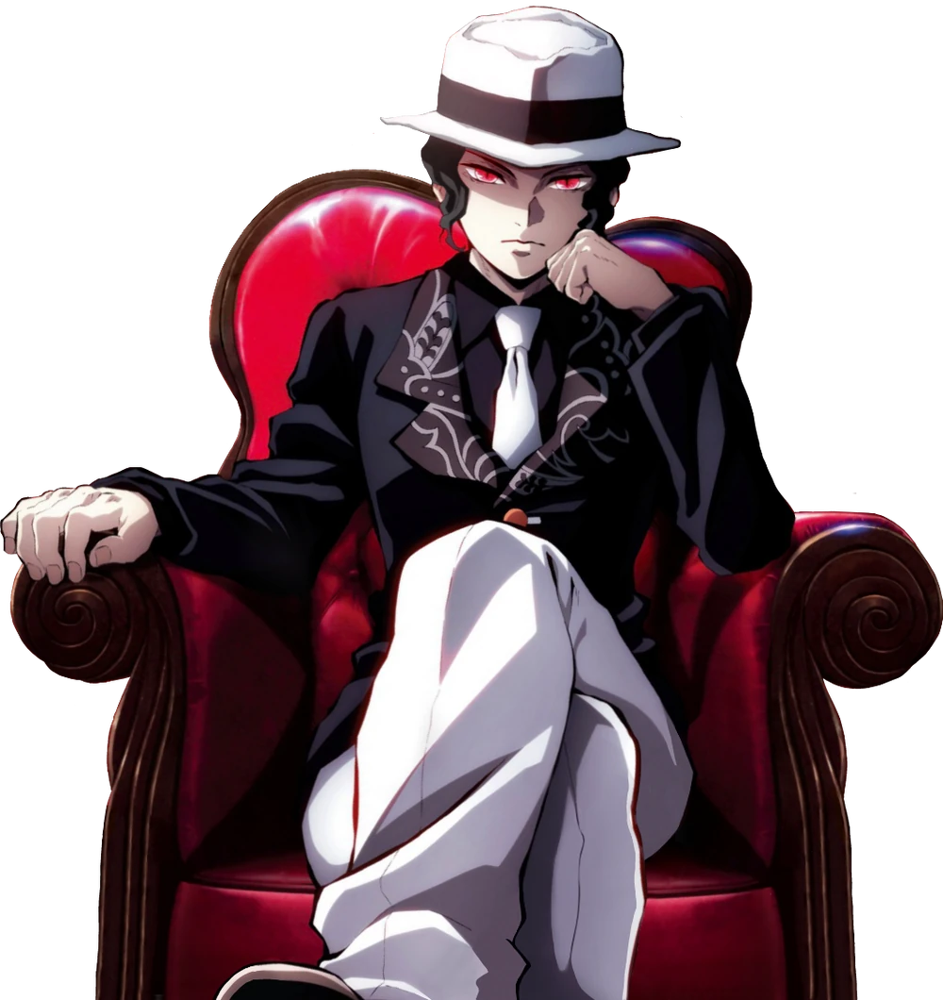

Project 3: TV Time
Demon Slayer: Kimetsu no Yaiba
Demon Slayer: Kimetsu no Yaiba follows Tanjiro Kamado, a compassionate boy who becomes a Demon Slayer after his family is brutally killed by demons and his sister Nezuko is transformed into one. Determined to avenge his family and find a way to turn Nezuko human again, Tanjiro joins the Demon Slayer Corps, a secret organization dedicated to hunting demons and protecting humanity. As he trains and undertakes dangerous missions, Tanjiro faces increasingly powerful demons, uncovers the origins of the demon race, and sets his sights on defeating Muzan Kibutsuji, the first and most powerful demon responsible for all others. The series explores themes of loss, resilience, and the bonds of family against the backdrop of a dark, fantastical world.
Genre: Shonen Anime, Dark Fantasy, Action, Adventure, Martial Arts
Run Date: April 6, 2019 – June 30, 2024
Seasons: 4 Episodes: 64
Available to Watch on Netflix, Crunchyroll, Hulu, Apple TV and Amazon Prime
Characters
Kamado Tamjiro
Tanjiro Kamado (竈門かまど 炭たん治じ郎ろう) is the main protagonist of the series. He is a Demon Slayer in the Demon Slayer Corps who joined to find a remedy to turn his sister, Nezuko Kamado, back into a human and to hunt down and kill demons,and later swore to defeat Muzan Kibutsuji, the King of Demons, in order to prevent others from suffering the same fate as him.
Tanjiro possesses several unique abilities that make him a standout Demon Slayer. His extremely sharp sense of smell lets him track demons, sense emotions, and detect the "Opening Thread"—a moment of weakness in his opponent’s moves. He was first trained in Water Breathing by Sakonji Urokodaki and later inherited the powerful Hinokami Kagura (Dance of the Fire God) from his father. Eventually, he blends both styles into a unique fighting technique. Alongside his combat skills, Tanjiro’s immense stamina, determination, and quick adaptability help him survive even the toughest battles, earning him respect across the Demon Slayer Corps.

Nezuko Kamado

Nezuko Kamado (竈門かまど 禰ね豆ず子こ ) is Tanjiro's younger sister who was turned into a demon during the massacre of their family. Unlike other demons, Nezuko retains strong emotions and loyalty to her brother, refusing to harm humans. Thanks to Urokodaki's hypnosis and her own willpower, she aids the Demon Slayers in battle. Nezuko possesses powerful regenerative abilities, blood demon art involving explosive blood flames, and incredible strength despite her small size. Her journey is one of inner strength, as she fights her demonic instincts to stay true to her humanity.
Nezuko’s demon abilities make her an exceptionally powerful fighter. Her regeneration is so rapid that she can recover from nearly any injury, allowing her to continue fighting even after taking severe damage. Her Blood Demon Art, which manifests as explosive blood flames, is one of her most lethal techniques, as the flames are both highly destructive and unique to her. These flames don’t burn her or Tanjiro, but they can incinerate demons on contact. Despite her small size, Nezuko's strength and speed far exceed those of regular humans, and she can easily overpower most enemies. Her combat style also relies on her agility, using swift, unpredictable movements to catch opponents off guard. Additionally, Nezuko’s resistance to sunlight, which is typically fatal to demons, allows her to fight during the day—a significant advantage. Her constant battle to hold onto her humanity while growing more powerful is central to her character’s development.
Zenitsu Agatsuma
Zenitsu Agatsuma (我あが妻つま 善ぜん逸いつ) is a Demon Slayer who travels alongside Tanjiro and Inosuke. He is often seen as cowardly, overly dramatic, and pessimistic, but when unconscious or pushed into a corner, his hidden talent shines. Zenitsu wields Thunder Breathing, mastering the First Form: Thunderclap and Flash, which he can unleash at blinding speeds. Zenitsu is driven by a deep sense of loyalty to his friends and a promise to live up to the expectations of his late master. Though often comically timid, his bravery shines when it matters most.
Zenitsu’s potential extends beyond his Thunder Breathing. Though initially inexperienced, Zenitsu gradually becomes more skilled, eventually mastering Sixth Form: Rumble and Flash, an advanced technique that enhances his lightning speed. His exceptional hearing, heightened to the point where he can perceive even the slightest movements, plays a key role in his combat style, allowing him to anticipate and react faster than most. Zenitsu also demonstrates great resilience in battle, pushing past his fears to protect his friends and fight demons with unmatched determination when it truly counts. His growth from a fearful, reluctant warrior to a brave and capable fighter is one of his most notable character arcs.

Inosuke Hashibira

Inosuke Hashibira (嘴はし平びら 伊い之の助すけ) is a brash and wild Demon Slayer raised by boars in the mountains. He is known for his short temper, headstrong attitude, and signature boar's head mask. Despite his rough nature, he’s fiercely loyal and has a surprisingly sensitive and curious side. Inosuke developed his own breathing style, Beast Breathing, which is highly aggressive and instinctual, matching his animal-like combat style. His keen sense of touch and flexibility make him a formidable ally.
Inosuke’s combat prowess is marked by his unorthodox fighting techniques and heightened senses. His self-taught Beast Breathing style includes unpredictable, animalistic movements that catch enemies off-guard. He possesses exceptional agility, reflexes, and raw physical strength, often charging headfirst into danger without hesitation. Beyond his tough exterior, Inosuke demonstrates impressive growth throughout the series—learning to trust others, value teamwork, and show vulnerability. His journey from a reckless lone wolf to a dependable comrade reveals the depth of his character and makes him a fan favorite.
Muzan Kibutsuji
Muzan Kibutsuji (鬼き舞ぶ辻つじ 無む惨ざん) is the primary antagonist of the series and the first demon, responsible for the creation of all other demons. Cunning, ruthless, and obsessed with perfection and immortality, Muzan seeks to rid the world of anything that threatens his existence, especially the Sun Breathing users. He can shape-shift, regenerate, and manipulate his own cells, making him nearly impossible to kill. Muzan is the source of Tanjiro and Nezuko’s tragedy, and his defeat becomes the central goal of the Demon Slayer Corps.
Muzan’s intellect is as dangerous as his physical powers—he is a master manipulator who instills fear and obedience among demons, often eliminating those who show even a hint of dissent. His ability to disguise himself in various human forms allows him to infiltrate society undetected, spreading chaos while maintaining control. Despite his overwhelming power, Muzan is deeply paranoid and driven by a fear of death, which fuels his relentless pursuit of a demon immune to sunlight. His cold, calculating nature and complete lack of empathy make him a chilling embodiment of evil and a fitting final adversary in the series.
